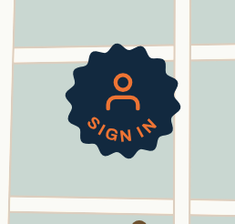
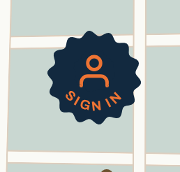
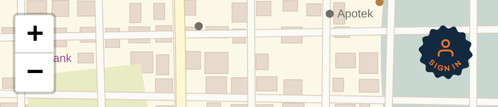
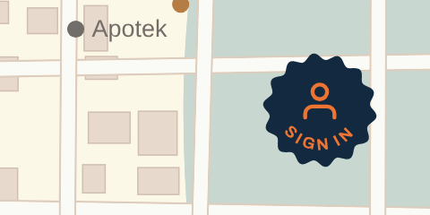

Arrive

0.06s
0.13s
0.25s

Signed in
Your notes: the person was too high, and with + changing, back to blue and orange. It's now today's navy badge with an orange person and orange SIGN IN, and the person sits between the last two heights.


Signing in, the words sink into the navy and the person grows into your usual badge. Signing out, the words come back.

